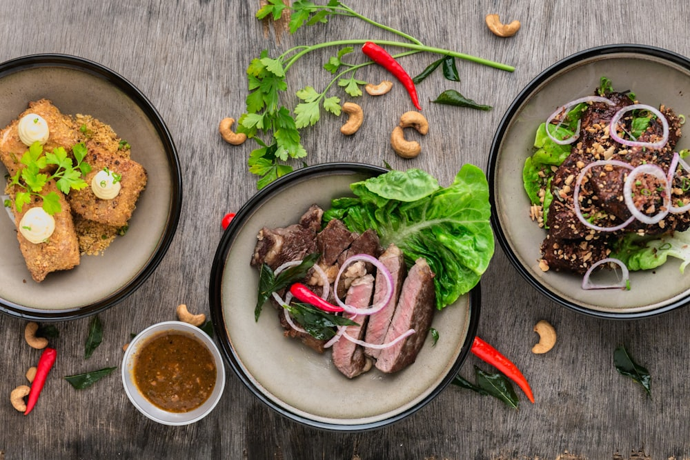
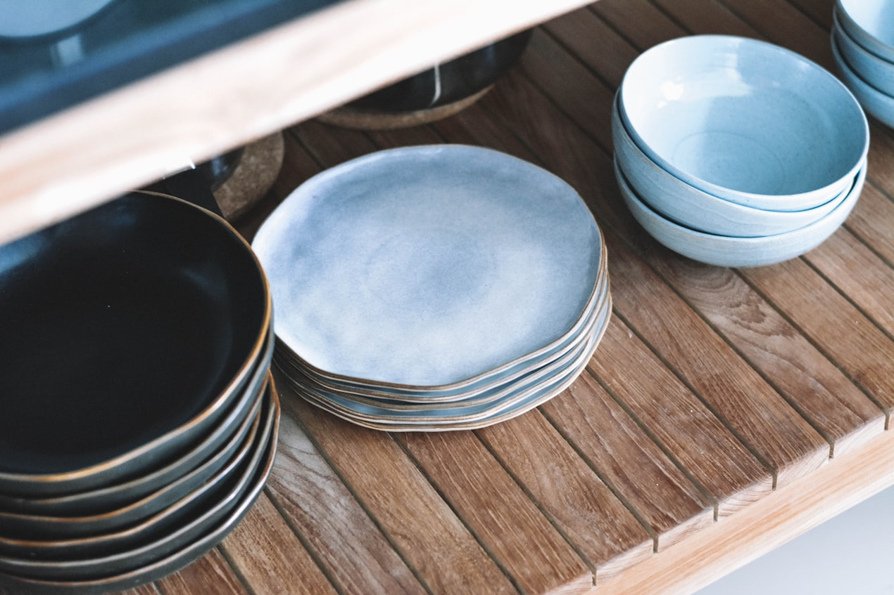

If ramen represents tensile sharpness and lamian embodies gossamer fluidity, Japanese Sanuki udon stands as the undisputed champion of viscoelastic bounce, density, and restorative rebound. Originating in Kagawa Prefecture on the Japanese island of Shikoku, genuine Sanuki udon is renowned for its remarkable koshi — a unique texture characterized by a yielding, silky surface that transitions into a dense, tooth-resisting core that springs back delightfully when bitten.
This legendary mouthfeel is not achieved through high-protein flours or chemical additives. Rather, it is the product of three counter-intuitive culinary variables: moderate-protein wheat varieties, astonishingly high salt concentrations, and extreme mechanical compression traditionally administered through human foot-kneading (ashi-fumi). At NoodleTable, our dinner udon courses explore the profound physics of this centuries-old technique.

1. The Kagawa Salinity Rule: Dohachigatsu
In Western culinary traditions, salt is added primarily as a seasoning agent at modest levels (1% to 1.5%). In Sanuki udon fabrication, however, salt is a structural building block introduced at levels ranging from 8% to 12% of the water weight.
Traditional Kagawa udon masters encapsulate this salinity calibration in an ancient mnemonic rule: Dohachigatsu (Soil 8, Earth 5):
- Summer Salinity (10% - 12%): Elevated atmospheric heat and humidity accelerate enzymatic activity and gluten relaxation. High salt levels tighten the protein matrix, preventing dough from turning slack.
- Winter Salinity (8% - 9%): Cold ambient temperatures naturally stiffen dough. Reducing salt slightly ensures the dough remains supple enough to accept mechanical compression.
Chemically, sodium chloride ions screen repulsive electrical charges along gluten polymers, allowing protein chains to associate more closely. This compacts the gluten network, creating an extraordinarily dense molecular matrix that repels excess water absorption during cooking.
| Seasonal Variable | Ambient Temperature | Brine Salinity (% of Water) | Resting Period (Hours) |
|---|---|---|---|
| Summer Service | 26°C - 30°C | 11.5% NaCl | 4 to 6 Hours |
| Autumn / Spring | 18°C - 22°C | 10.0% NaCl | 8 to 12 Hours |
| Winter Service | 10°C - 14°C | 8.5% NaCl | 16 to 24 Hours |
2. The Biomechanics of Ashi-Fumi (Foot Compression)
Because Sanuki udon dough possesses low hydration (46% to 50%) relative to its high salt concentration, the resulting mixture is too stiff and unyielding to knead with human hands. Manual wrist pressure cannot generate sufficient force to compress the dense mass.
Historically — and still practiced daily in our dedicated dough room at 181 Mercer Street — artisans enclose the rested dough mass within thick, sanitized linen cloths and compress it through rhythmically applied body weight. By stepping from the center outward in concentric spirals, the artisan exerts immense mechanical pressure, flattening the dough into a disk before folding it into thirds and repeating the process.
This multi-directional foot kneading accomplishes two structural feats: it completely eliminates internal air pockets, and it creates a laminated, multi-layered gluten structure similar to puff pastry dough. When sliced and cooked, these micro-layers produce the legendary three-dimensional chew that defines authentic Sanuki craft.
3. Starch Gelatinization & The Twelve-Minute Boil
Due to the substantial cross-sectional thickness of square-cut Sanuki udon (typically 3.5mm to 4.5mm), cooking requires an extended twelve to fourteen-minute boil in vast volumes of bubbling water. The water-to-noodle ratio must be at least 10:1 to ensure that leached salt does not saturate the boiling bath and impede starch gelatinization.
During this extended boil, a dramatic transformation occurs: the immense internal salt concentration leaches out into the cooking water, while water diffuses inward. The outer millimeter of the noodle gelatinizes into a soft, translucent gel, while the core remains dense, salty, and firmly resistant to the bite. This steep moisture gradient between the exterior and interior is the physical origin of koshi.

4. The Cold-Shock Rinse (Mizuarai)
Immediately upon lifting the thick udon ribbons from the boiling cauldron, they are plunged into a bath of ice-cold spring water (4°C) and massaged vigorously between the artisan's palms. This step — mizuarai — serves two critical purposes:
- Surface Starch Removal: It washes away gummy free amylose starches that have accumulated on the exterior, imparting a mirror-like shine and slick surface.
- Thermal Retrogradation Shock: Rapidly cooling the exterior causes the expanded gelatinized starch molecules to contract and firm up instantly, locking in the dense elastic bite before the noodles receive their hot dinner dashi.
5. Viscoelastic Storage and Loss Moduli in Udon Texture
In modern food engineering rheology, texture is quantified using dynamic oscillatory shear measurements that isolate the storage modulus (G', reflecting solid elastic behavior) and loss modulus (G'', reflecting liquid viscous dissipation). For authentic Sanuki udon, the ratio tan delta = G'' / G' must remain within the critical window of 0.32 to 0.38 at 25°C.
When the loss factor falls below 0.30, the noodle behaves like brittle cured pasta, lacking the characteristic pillowy give when bitten. Conversely, when tan delta exceeds 0.45, the dough exhibits excessive viscous slump, turning soggy and flaccid under hot broth immersion. The combination of 10% brine hydration and rhythmic ashi-fumi foot-kneading permanently locks the protein matrix within this optimum viscoelastic envelope, creating the unmistakable signature spring of Kagawa craft.
Frequently Asked Technical Questions
No. During the prolonged 12-minute boil, over 85% of the initial sodium chloride leaches out into the surrounding boiling water via osmotic diffusion. The finished noodle retains only a gentle, pleasant seasoning level of approximately 0.8% salt.
Australian Standard White (ASW) wheat and Japanese Sanuki no Yume cultivars are ideal. These wheats feature moderate protein (8.5% to 9.5%) with extraordinarily high amylose content and unique swelling capacity that creates a mochi-like spring.
Authentic udon has a strict 15-minute operational lifespan after the cold-shock rinse. Beyond this window, internal moisture equilibrates throughout the strand, destroying the moisture gradient and eliminating the distinct firm core.